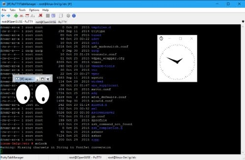

DescripciónHerramienta de Windows para administrar varias instancias de PuTTY en una sola ventana mediante pestañas.PuTTY Tab Manager permite ejecutar múltiples sesiones de PuTTY, conocido cliente de ssh y telnet para windows, en una misma ventana mediante pestañas.  Descargas:
Para mayor información acerca de PuTTY , puedes dirigirte a la página de PuTTY de Simon Tatham o a la paguna de KiTTY de Cyd.
Por otra parte, si el software necesario está disponible, puede realizar transferencias de archivos mediante WinSCP y ejecutar aplicaciones X mediante un servidor X-Server (Xming , VcXsrv , Portable X-Server, ... ). Características
Requerimientos
Instación La instalación es muy sencilla, descarga el archivo ZIP desde aqui , descomprimelo en la carpeta que desees y ya puedes disfrutar del programa. Login automáticoUna forma sencilla de automatizar un inicio de sesión remoto es proporcionar la contraseña en la pestaña 'Connet to' del dialogo 'Add new tab' . Esto no es recomendable por razones de seguridad .Tenga en cuenta que esta a opción sólo esta disponible cuando se utiliza el protocolo SSH. Modo PortableDe forma predeterminada, PuttyTabManager utiliza la base de datos del Registro de Windows para guardar su configuración. Es posible guardarla en un archivo para que no haya que escribir nada en el Registro. Para ello sólo tienes que copiar el binario de PuTTY (putty.exe) y crear un archivo llamado puttytm.ini en el mismo directorio donde pusiste el binario de PuttyTabManager ( puttytm.exe) . Linea de comandos uso: puttytm.exe [-a <PuTTY command line >] [-c] [-f <fichero>] -a <PuTTY command line>: ejecuta PuTTY con los parámetros indicados en <PuTTY command line> -c : Borra la información de PuTTYTabManager del registro de Windows. -f <fichero>: ejecuta PuTTY/KiTTY con las opciones que de le indiquen en el fichero de sesiones (una sesión por casa linea) ejemplo fichero de sesiones PuTTY:
Licencia de usoQueda permitido el uso de este software con fines no comerciales.Se autoriza su libre distribución siempre que sea en su paquete de instalación original. Este software se proporciona tal y como es, sin ninguna garantía. En ningún caso el/los autores serán responsables de posibles daños producidos por el uso de este software. |
Utilidades >